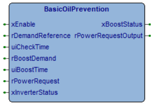

BasicOilPrevention
Alarms & Safety
Intermediate
FunctionBlock
v1.2.3
FBD Diagram

basicoilprevention.png
Description

It produces a periodically boost output if the power request is below a reference demand, in particular:
1) If xEnable is FALSE then the outputs rPowerRequestOutput is equal to rPowerRequest, and xBoostStatus is FALSE.
2) If xEnable is TRUE and xInverterStatus is FALSE then rPowerRequestOutput is equal to rPowerRequest.
3) If xEnable is TRUE and xInverterStatus is TRUE and rPowerRequest is above rDemandReference then rPowerRequestOutput is equal to rPowerRequest.
4) If xEnable is TRUE and xInverterStatus is TRUE and rPowerRequest is below rDemandReference then the boost function can operate, every uiCheckTime minutes the rPowerRequestOutput assumes the value rBoostDemand for a time duration of uiBoostTime.
Inputs (7)
| Name | Type | Init | Description |
|---|---|---|---|
| xEnable | BOOL | BOOL, range [FALSE,TRUE] | |
| rDemandReference | REAL | REAL, unit [%], range [0,100.0] | |
| uiCheckTime | UINT | UINT, unit [min], range [0,30000] | |
| rBoostDemand | REAL | REAL, unit [%], range [0,100.0] | |
| uiBoostTime | UINT | UINT, unit [s], range [0,30000] | |
| rPowerRequest | REAL | REAL, unit [%], range [0,100.0] | |
| xInverterStatus | BOOL | BOOL, range [FALSE,TRUE] |
Outputs (2)
| Name | Type | Description |
|---|---|---|
| xBoostStatus | BOOL | BOOL, range [FALSE,TRUE] |
| rPowerRequestOutput | REAL | REAL, unit [%], range [0,100.0] |
Local Variables (5)
| Name | Type | Description |
|---|---|---|
| xStartCheckPeriod | BOOL | |
| xFirstCycleDone | BOOL | |
| tsCheckDemandTimer | TTimerSec | |
| tsBoostTimer | TTimerSec | |
| xDummy | BOOL |
Source Code (ST)
IF (xFirstCycleDone = FALSE) THEN
xStartCheckPeriod := FALSE;
xBoostStatus := FALSE;
xFirstCycleDone := TRUE;
END_IF;
IF(xEnable = FALSE) THEN
rPowerRequestOutput := rPowerRequest;
xBoostStatus := FALSE;
xStartCheckPeriod := FALSE;
xBoostStatus := FALSE;
RETURN;
END_IF;
IF (xBoostStatus = FALSE) THEN
IF (xStartCheckPeriod = FALSE) THEN
xDummy := tsCheckDemandTimer.Start();
END_IF;
IF (xInverterStatus = TRUE AND rPowerRequest > TO_REAL(0) AND rPowerRequest <= rDemandReference) THEN
xStartCheckPeriod := TRUE;
ELSE
xStartCheckPeriod := FALSE;
END_IF;
IF (xStartCheckPeriod = TRUE AND tsCheckDemandTimer.ElapsedSec() >= uiCheckTime * 60) THEN
xDummy := tsBoostTimer.Start();
xBoostStatus := TRUE;
END_IF;
ELSIF (xBoostStatus = TRUE) THEN
IF (tsBoostTimer.ElapsedSec() >= uiBoostTime) THEN
xBoostStatus := FALSE;
xStartCheckPeriod := FALSE;
END_IF;
END_IF;
(* Set outputs *)
IF (xBoostStatus = TRUE) THEN
rPowerRequestOutput := rBoostDemand;
xBoostStatus := TRUE;
ELSE
rPowerRequestOutput := rPowerRequest;
xBoostStatus := FALSE;
END_IF;
(* Original
struct BasicOilPrevention
{
// public
BOOL Enable;
INT DemandReference;
INT CheckTime;
INT BoostTime;
INT BoostDemand;
INT PowerRequest;
BOOL InverterStatus;
//Output
INT PowerRequestOutput;
BOOL BoostStatus;
// private
TTimerSec CheckDemandTimer;
TTimerSec BoostTimer;
bit bStartCheckPeriod;
bit bBoostStatus;
void Init()
{
bStartCheckPeriod = 0;
bBoostStatus = 0;
}
void Main()
{
if(Enable == 0)
{
PowerRequestOutput = PowerRequest;
BoostStatus = 0;
bStartCheckPeriod = 0;
bBoostStatus = 0;
return;
}
if(bBoostStatus == 0)
{
if(bStartCheckPeriod == 0)
{
CheckDemandTimer.Start();
}
if(InverterStatus != 0 && PowerRequest > 0 && PowerRequest <= DemandReference)
{
bStartCheckPeriod = 1;
}
else
{
bStartCheckPeriod = 0;
}
if(bStartCheckPeriod == 1 && CheckDemandTimer.ElapsedSec() > CheckTime * 60)
{
BoostTimer.Start();
bBoostStatus = 1;
}
}
else if(bBoostStatus == 1)
{
if(BoostTimer.ElapsedSec() > BoostTime)
{
bBoostStatus = 0;
bStartCheckPeriod = 0;
}
}
//Set outputs
if(bBoostStatus == 1)
{
PowerRequestOutput = BoostDemand;
BoostStatus = 1;
}
else
{
PowerRequestOutput = PowerRequest;
BoostStatus = 0;
}
}
};
*)